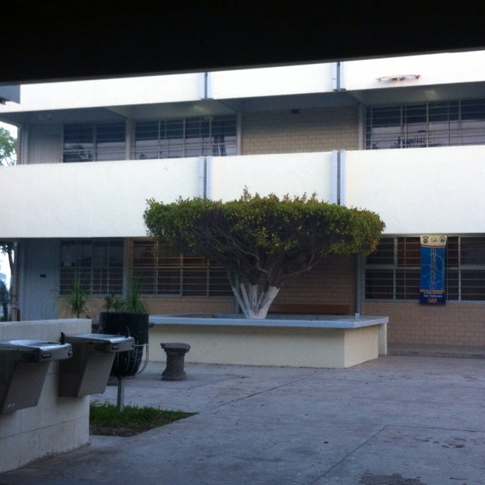

Kinder :
Jardín de niños Justo Sierra
2 años
Primaria :
Escuela Primaria María Elena Vizconde
6 años
Secundaria :
Escuela Secundaria Técnica #74
3 años
Preparatoria :
Centro de bachillerato tecnológico No. 43
3 años

Universidad (actual) :
Facultad de Ingeniería Mochis (UAS)
2.5 años a la fecha